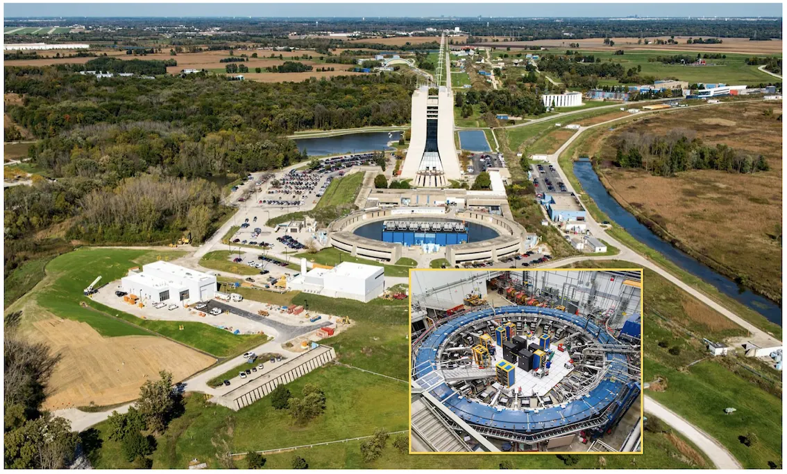
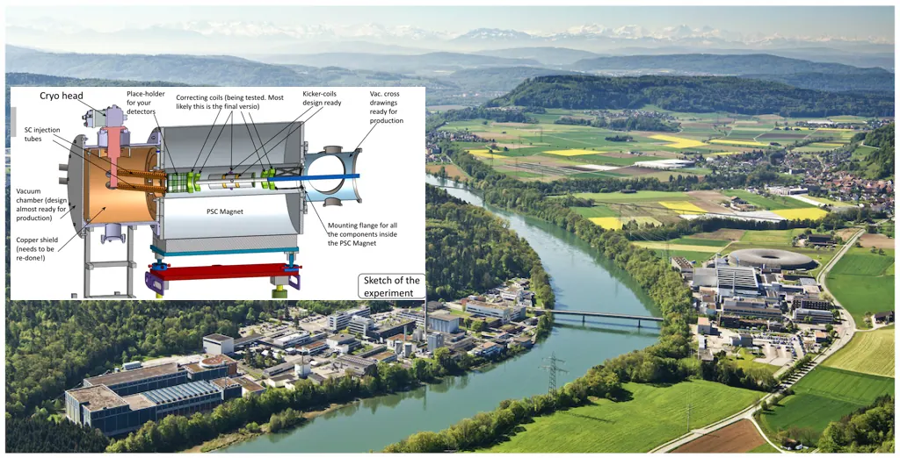
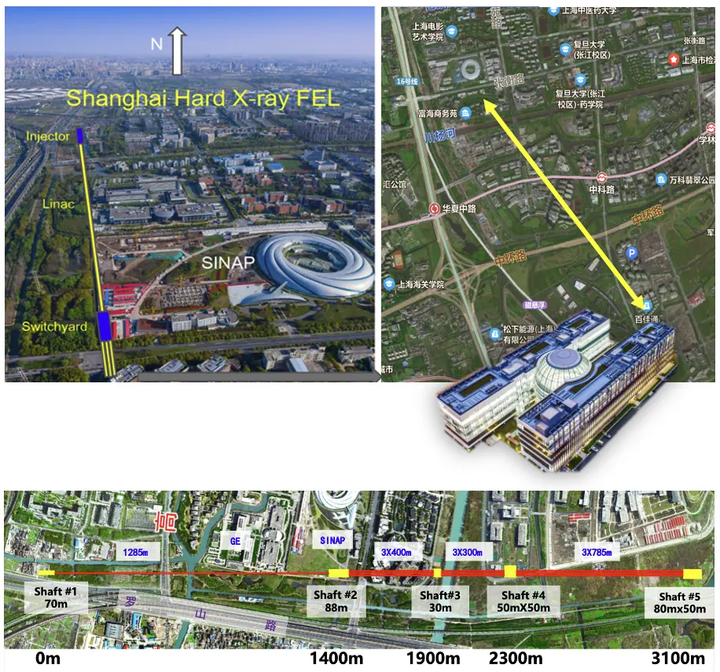
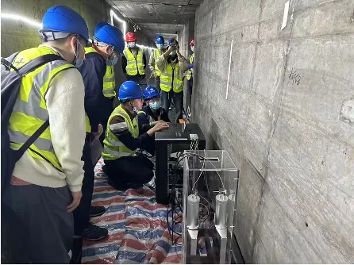

R&DResearch研究方向
Research研究方向
Precision muon physics from Fermilab to PSI, a new muon source at SHINE, and muography beneath Shanghai.从费米实验室到PSI的精密缪子物理、SHINE新型缪子源，以及上海地下空间的缪子成像。
We use the muon as a precision probe of fundamental physics, and as a practical tool for seeing inside large structures. Our work spans the full chain: precision measurements at Fermilab and PSI, a new muon source at SHINE in Shanghai, and muography of the city’s underground infrastructure. Our research interests include:
- Physics beyond the Standard Model
- Anomalous magnetic moments and electric dipole moments
- Muon production from GeV electron beam
- Muography
- Muon cooling and muonium production
Muon g-2 experiment at Fermilab, USA
The anomalous magnetic moment of the muon, aμ = (g−2)/2, is one of the most precisely measured and calculated quantities in particle physics, which makes it a sensitive test of the Standard Model (SM). For two decades, the Brookhaven E821 result sat more than three standard deviations above the SM prediction, fuelling models with supersymmetry, dark photons, axion-like particles and more. The Fermilab Muon g-2 Experiment (E989) was built to settle the question with four times better precision. Its final result, released in 2025, reached 127 parts per billion — better than the 140 ppb design goal — and is now the most precise measurement of aμ. Meanwhile, the 2025 SM prediction, which uses lattice-QCD calculations of the hadronic vacuum polarisation, moved into agreement with experiment. Resolving the remaining tension between lattice and data-driven evaluations of that hadronic contribution is now a central task for theory. The same data also set a new direct limit on the muon electric dipole moment. Our group works mainly on the measurement of the anomalous precession frequency ωa and its beam-dynamics corrections.


Suggested Reading
- Final Report on the Measurement of the Positive Muon Anomalous Magnetic Moment at Fermilab to 127 ppb, Muon g-2 Collaboration, arXiv:2606.17323 [hep-ex] (2026)
https://arxiv.org/abs/2606.17323 - Measurement of the Positive Muon Anomalous Magnetic Moment to 127 ppb, Muon g-2 Collaboration, Phys. Rev. Lett. 135, 101802 (2025)
https://doi.org/10.1103/7clf-sm2v - Official website for Muon g-2 experiment (E989)
https://muon-g-2.fnal.gov/ - Measurement of the Positive Muon Anomalous Magnetic Moment to 0.20 ppm, Phys. Rev. Lett. 131, 161802 (2023)
https://doi.org/10.1103/PhysRevLett.131.161802 - Measurement of the Positive Muon Anomalous Magnetic Moment to 0.46 ppm, Phys. Rev. Lett. 126, 141801 (2021)
https://doi.org/10.1103/PhysRevLett.126.141801 - Muon g−2: a review, Nucl. Phys. B 975 (2022) 115675
https://doi.org/10.1016/j.nuclphysb.2022.115675 - Muon (g-2) Technical Design Report, J. Grange, et al. (2015)
https://arxiv.org/abs/1501.06858 - Spinning Muons and a Path to Discovery, Phys. Teach. 57, 216–220 (2019)
https://aapt.scitation.org/doi/10.1119/1.5095372 - The Physics of g-2 (Multimedia)
https://www.osti.gov/sciencecinema/biblio/1254328
Muon Electric Dipole Moment search at Paul Scherrer Institut, Switzerland
A permanent electric dipole moment (EDM) of an elementary particle violates both time-reversal and charge-parity (CP) symmetry, a key ingredient needed to explain the matter–antimatter asymmetry of the universe. In the Standard Model the muon EDM is around 10−38 e·cm, far beyond any experiment, so any signal would be clear evidence of new physics. Yet many extensions of the Standard Model predict values within reach. The best direct limit, |dμ| < 1.1 × 10−19 e·cm from the Fermilab g-2 storage ring, still leaves the muon EDM one of the least-tested corners of the Standard Model. The muEDM experiment at PSI will use the frozen-spin technique in a compact solenoid storage trap. There, a radial electric field cancels the anomalous spin precession, so that only an EDM can tilt the spin. In the muon rest frame this gives an effective electric field of about 165 MV/m. Phase I aims for a sensitivity of 4 × 10−21 e·cm, and Phase II for 6 × 10−23 e·cm. Our group designs, builds and tests the muon entrance trigger detector and its fast front-end electronics, which pick out stored muons and fire the kick that holds them in the trap.


Try it live: CHeT Live Tracking — an in-browser muEDM event display in which simulated decay positrons are tracked and helix-fitted in real time.
Suggested Reading
- An improved direct limit on the muon electric dipole moment, Muon g-2 Collaboration, arXiv:2608.11124 [hep-ex] (2026)
https://arxiv.org/abs/2608.11124 - Construction and characterization of a muon trigger detector for the PSI muEDM experiment, G.M. Wong et al., Eur. Phys. J. C 86, 911 (2026)
https://doi.org/10.1140/epjc/s10052-026-16145-6 - A compact frozen-spin trap for the search for the electric dipole moment of the muon, A. Adelmann et al., Eur. Phys. J. C 85, 622 (2025)
https://doi.org/10.1140/epjc/s10052-025-14295-7 - Status of the muEDM Experiment at PSI, Phys. Sci. Forum 8 (2023) 1, 50
https://doi.org/10.3390/psf2023008050 - Search for a muon EDM using the frozen-spin technique, A Adelmann et al., arXiv:2102:08838 [hep-ex] (2021)
https://arxiv.org/abs/2102.08838 - Search for the muon electric dipole moment using frozen-spin technique at PSI
https://inspirehep.net/literature/2015643 - Kick-off workshop for the search of a muon EDM using the frozen spin technique at PSI
https://indico.psi.ch/event/8339/ - Combined explanations of (g − 2)_μ,e and implications for a large muon EDM, A. Crivellin et al., Phys. Rev. D 98, 113002 (2018)
https://doi.org/10.1103/PhysRevD.98.113002 - Compact storage ring to search for the muon electric dipole moment, A Adelmann et al., J. Phys. G: Nucl. Part. Phys. 37 085001 (2010)
https://doi.org/10.1088/0954-3899/37/8/085001
Next-generation muon source based on Shanghai SHINE facility
Muons are used across physics, from precision tests of the Standard Model to muon spin rotation (μSR) studies of superconductors and magnetic materials. With a mean lifetime of 2.2 μs, and about ten lifetimes needed per measurement, the ideal pulsed muon source would run near 50 kHz. Today’s sources are either pulsed proton machines at 25–50 Hz (J-PARC, ISIS) or continuous ones (PSI, TRIUMF), which limits the duty cycle for many experiments. We are exploring a different driver: the high-repetition-rate electron beam of SHINE, Shanghai’s hard X-ray free-electron laser. SHINE is built on an 8 GeV continuous-wave superconducting linac with bunch rates up to 1 MHz and 100 pC per bunch. Downstream of the undulators, about 1022 electrons a year end up in the beam dump. Our simulations show that these bunches, steered onto a copper target, could deliver about 60 surface muons per bunch to the end of a beamline. At 50 kHz that is 3 × 106 μ+/s, comparable to existing facilities but with a pulse rate a thousand times higher. The same beam also yields a forward component of GeV-scale muons, which opens the door to accelerator-based muography. Simulations with SHINE’s 3 GeV commissioning beam show that a scattering-tomography image of useful quality could be collected in about six hours.


Suggested Reading
- Simulation studies of a high-repetition-rate electron-driven surface muon beamline at SHINE, F. Liu, Y. Takeuchi, S. Chen et al., Phys. Rev. Accel. Beams 28, 083401 (2025)
https://doi.org/10.1103/t2d3-xqnp - Design studies on a kHz–MHz repetition rate pulsed muon source based on electron accelerator, Y. Takeuchi, F. Liu, J. Wang et al., IPAC 2025, TUPM092
https://doi.org/10.18429/JACoW-IPAC2025-TUPM092 - Muon source project at SHINE, Y. Takeuchi, MIP 2024, Beijing
https://indico.cern.ch/event/1356341/contributions/5836913/ - A Pulsed Muon Source Based on a High-Repetition-Rate Electron Accelerator, M. Lv, J. Wang, and K. S. Khaw, IPAC 2023, Venice
https://doi.org/10.18429/JACoW-IPAC2023-TUPA087 - SCLF: An 8-GeV CW SCRF Linac-Based X-Ray FEL Facility in Shanghai, Z. Zhao, D. Wang, Z.-H. Yang, and L. Yin, 38th International Free-Electron Laser Conference, Feb. 2018
https://doi.org/10.18429/JACoW-FEL2017-MOP055 - Towards a dedicated high-intensity muon facility, R. Cywinski et al., Physica B, vol. 404, pp. 1024–1027, 212 (2009)
https://doi.org/10.1016/j.physb.2008.11.203 - Muon Physics Possibilities at the Shanghai SHINE facility, K.S. Khaw, The 2022 Shanghai Particle Physics and Cosmology Symposium, Shanghai
https://indico-tdli.sjtu.edu.cn/event/1309/contributions/5660/
Application of Muography to City Underground Surveys
Muography uses cosmic-ray muons, which arrive at about one per square centimetre per minute and can pass through hundreds of metres of rock, to image the inside of large objects without touching them. Absorption muography maps density from how many muons get through; scattering tomography reconstructs material from how much they are deflected. Since 2024, our group has been building compact, portable muon detectors and applying them to the underground spaces of a megacity. In the Shanghai Outer Ring Tunnel, an immersed tube beneath the Huangpu River, our detector recorded a muon rate that rises and falls with the river tide, demonstrating non-invasive monitoring of sediment above the tunnel. At TDLI, our three-layer Cosmic-ray Muography System, built from triangular scintillator bars read out by SiPMs, now takes data in radiography mode. In 2026 we took portable detectors abroad for the first time, surveying limestone and karst sites across Peninsular Malaysia. Our muography project also won a First Prize at the 15th “Challenge Cup” Shanghai entrepreneurship competition.


Try it live: SciFi-MST Live — an interactive 3D simulation of our scintillating-fibre muon scattering tomograph imaging reinforced concrete, with reconstructed scattering-density slices.
Suggested Reading
- Simulation study of accelerator-based muography using the GeV-scale forward muon component at SHINE, J. Wang, Y. Wang, S. Chen et al., arXiv:2609.15846 (2026)
https://arxiv.org/abs/2609.15846 - Towards non-invasive sediment monitoring using muography: A pilot run at the Shanghai Outer Ring Tunnel, K.S. Khaw, S.Y. Hoh, T. Hu et al., J. Appl. Phys. 138, 114902 (2025)
https://doi.org/10.1063/5.0273686 - 宇宙射线缪子成像技术在中国的研究进展 Research Progress of Muography in China, K. Yao et al., Chinese Journal of Inorganic Analytical Chemistry，2024，14(6), 715-731
https://doi.org/10.3969/j.issn.2095-1035.2024.06.004 - Muography, Tanaka, H.K.M., Bozza, C., Bross, A. et al., Nat Rev Methods Primers 3 (2023), 88
https://doi.org/10.1038/s43586-023-00270-7 - Deep investigation of muography in discovering geological structures in mineral exploration: a case study of Zaozigou gold mine, G. Liu et al., Geophysical Journal International, Volume 237 1, 588–603 (2024)
https://doi.org/10.1093/gji/ggae057 - Muography: Exploring Earth’s Subsurface with Elementary Particles, László Oláh, Hiroyuki K. M. Tanaka, Dezső Varga, Geophysical Monography Series (2022)
https://www.wiley.com/en-us/Muography%3A+Exploring+Earth’s+Subsurface+with+Elementary+Particles-p-9781119723066 - Muon tomography in geoscientific research – A guide to best practice, Alessandro Lechmann et al., Earth-Science Reviews 222 (2023), 103842
https://doi.org/10.1016/j.earscirev.2021.103842 - Cosmic ray measure overburden of tunnel, E.P. George, Commonwealth Engineer 43, (1955) 455-457
Acknowledgment
I would like to acknowledge the funding supports of the following funding agencies for my research work:
- 2023-2038: MOST National Key R&D Program
- 2022-2026: Shanghai Pilot Program for Basic Research
- 2021-2024: NSFC General Program, National Natural Science Foundation of China
- 2021-2022: The Research Fund for International Young Scientists, NSFC